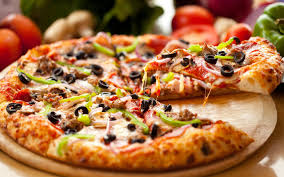
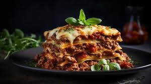
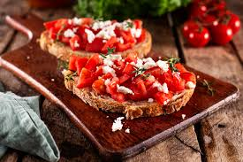
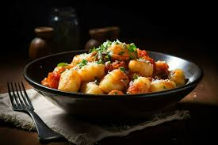
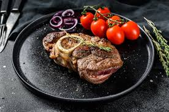
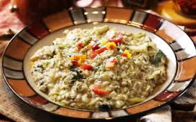
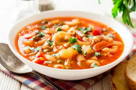
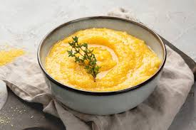

Pizza
Dough, tomato sauce, and mozzarella cheese.
Ingredients
- Flour: 500 g
- Water: 300 ml
- Dry yeast: 7 g
- Salt: 10 g
- Sugar: 10 g
- Olive oil: 30 ml
- Tomato sauce: 150 g
- Mozzarella cheese: 200 g
Recipe
- Mix yeast, water, sugar, and a bit of flour and let it activate.
- Add salt and olive oil, then knead into a smooth dough.
- Let the dough rise for 1 hour.
- Roll out the dough and spread tomato sauce over it.
- Place mozzarella slices on top and bake in a preheated oven at 220°C for 10-12 minutes.
- Garnish with basil leaves and serve.
Lasagna
Layered with pasta sheets, minced meat, and béchamel sauce.
Ingredients
- Lasagna sheets: 500 g
- Minced meat: 400 g
- Tomato puree: 400 g
- Onion: 100 g
- Garlic: 2 cloves
- Béchamel sauce:
- Butter: 50 g
- Flour: 50 g
- Milk: 500 ml
- Mozzarella: 200 g
- Parmesan: 50 g
Recipe
- Sauté onion and garlic, then add minced meat and cook.
- Add tomato puree and simmer for 15 minutes.
- For béchamel sauce, melt butter, stir in flour, and gradually add milk until thickened.
- Layer lasagna sheets, meat sauce, béchamel, and cheese in a baking dish.
- Repeat layers and bake at 180°C for 30-40 minutes.
Bruschetta
Toasted bread topped with tomatoes and olive oil.
Ingredients
- Bread slices: 8
- Tomatoes: 4 (200 g)
- Garlic: 2 cloves
- Olive oil: 40 ml
- Fresh basil: 10 leaves
- Salt: 5 g
- Black pepper: 2 g
Recipe
- Dice tomatoes and mix with basil.
- Toast bread slices and rub with garlic.
- Top bread with tomato mixture and drizzle olive oil.
- Season with salt and pepper, then serve.
Gnocchi
Small dough balls made with potatoes and flour.
Ingredients
- Potatoes: 500 g
- Flour: 150 g
- Egg: 1
- Salt: 5 g
Recipe
- Boil potatoes, mash them, and let them cool. Knead with flour and egg.
- Roll dough into cylinders and cut into 2 cm pieces.
- Cook in boiling water until they float.
- Mix with sauce (e.g., tomato or butter-garlic) and serve.
Saltimbocca

Meat flavored with sage and prosciutto.
Ingredients
- Veal cutlets: 400 g (8 slices)
- Prosciutto: 8 slices
- Sage leaves: 8
- Flour: 50 g
- White wine: 100 ml
- Olive oil: 20 ml
- Butter: 20 g
Recipe
- Place prosciutto and sage on veal slices and secure with a toothpick.
- Lightly coat in flour and fry in oil on both sides.
- Add white wine to the pan to make a sauce.
- Serve meat with the sauce.
Osso Buco
Traditional dish with veal shank and vegetables.
Ingredients
- Veal shank: 4 slices (1 kg)
- Onion: 1 (150 g)
- Carrot: 1 (100 g)
- Celery: 2 stalks (100 g)
- Tomato puree: 200 g
- Stock: 500 ml
- Olive oil: 30 ml
Recipe
- Dredge veal shanks in flour and sear them.
- Sauté onion, carrot, and celery.
- Add tomato puree and stock, then simmer for 2 hours.
- Garnish with gremolata (parsley, garlic, lemon zest) and serve.
Risotto
Creamy rice dish served with vegetables.
Ingredients
- Arborio rice: 300 g
- Onion: 50 g
- Garlic: 1 clove
- White wine: 100 ml
- Stock: 1 liter
- Parmesan: 50 g
- Butter: 50 g
- Olive oil: 20 ml
Recipe
- Sauté onion and garlic, add rice and cook for 2 minutes.
- Add white wine and let it evaporate, then gradually add stock while stirring.
- Mix in butter and parmesan, then serve.
Minestrone
Italian soup made with various vegetables.
Ingredients
- Mixed vegetables (carrot, zucchini, celery, beans): 500 g
- Tomato puree: 200 g
- Chicken stock: 1 liter
- Olive oil: 30 ml
- Small pasta: 50 g (optional)
- Salt and pepper: To taste
Recipe
- Chop and sauté vegetables.
- Add tomato puree and chicken stock, then simmer for 20 minutes.
- Add pasta and cook until tender.
- Season with salt and pepper, then serve.
Polenta
Traditional Italian dish made with cornmeal.
Ingredients
- Cornmeal: 200 g
- Water: 800 ml
- Butter: 30 g
- Parmesan: 50 g
- Salt: 5 g
Recipe
- Boil water, add salt, and gradually stir in cornmeal.
- Cook while stirring constantly for 30 minutes.
- Mix in butter and parmesan.
- Spread onto a surface, let cool, then slice and serve.